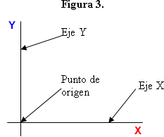

Tema 2: Los ejes de un gráfico (X e Y)
Un gráfico es el resultado de la unión de dos líneas individuales o ejes, como los de la Figura 2 anterior. Los ejes, cada uno de los cuales representa una variable de interés diferente, se unen (a) en forma perpendicular entre sí, es decir, uno se coloca en forma horizontal y el otro en forma vertical, y, (b) en el caso de variables numéricas, los ejes se intersectan entre sí en sus respectivos ‘ceros’. El punto de intersección se llama el ‘punto de origen’.
Por convención matemática, el eje horizontal se denomina ‘eje X’, mientras que el eje vertical se denomina ‘eje Y’. El resultado de la combinación perpendicular de estos dos ejes es un plano, es decir, un gráfico de ‘dos dimensiones’, que proporciona una imagen de las relaciones entre las dos variables representadas por los ejes. Los ejes podrían representar prácticamente cualquier cosa interesante para la formulación de las políticas de educación que uno se pueda imaginar, como métodos de enseñanza, gasto por estudiante en dólares, calificaciones de pruebas, países, al igual que el rendimiento de lectura del octavo año, ingreso familiar, calificaciones o remuneraciones de los maestros, regiones mundiales, etc.
Un uso común y muy importante de los gráficos en economía es en el análisis de la oferta y la demanda. En éste, el eje Y representa el precio de un bien (como los salarios de los maestros, derechos de matrícula, el precio de los libros de texto, etc.) y el eje X la cantidad de ese mismo bien. (Ver la Figura 1 en el módulo anterior.)